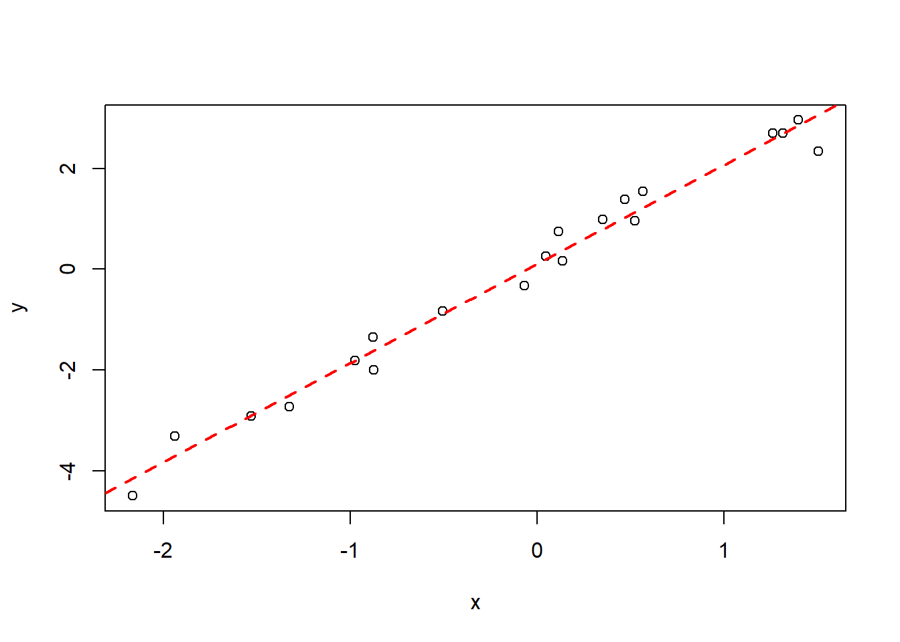

课后练习
说明：
- 练习以R语言实现；
- 部分教程请参考南科大环境学院《环境数据分析》网站。网站为英文，请自行翻译。
- 灰色框内为代码，白色框内为输出结果。
RStudio桌面版基础操作
R语言基础教程
请参考R语言基础教程
1 随机采样
# 创建数据
data <- c(1, 2, 6, 4, 5, 6, 7, 8, 3, 6, 9)
# 函数库
library(base)
# sample函数
# 由以上数据中，随机采3个数据
sample(data, 3)## [1] 1 6 32 基础统计量
## Min. 1st Qu. Median Mean 3rd Qu. Max.
## 1.000 3.500 6.000 5.182 6.500 9.000## [1] 2.482667## [1] 3## 25%
## 3.53 偏度与峰态系数
## [1] -0.2171739## [1] 2.0870736 正态分布概率密度
# 函数库
library(base)
# 创建数列，-5到5，步长0.01
x <- seq(-5.0, 5.0, by=0.01)
# 输出正态分布概率密度
# Mean = 0, sd = 1
density1 <- dnorm(x, 0, 1)
# 画图
plot(x, density1, col="black", xlab="", ylab="Density",
type="l", lwd=3, cex=2,
xlim=c(-5.0, 5.0),
main="PDF of normal distributions")
# 输出正态分布概率密度
# Mean = 1, sd = 1
density2 <- dnorm(x, 1, 1)
lines(x, density2, col="blue", xlab="", ylab="Density",
type="l", lwd=3, cex=2)
# 输出正态分布概率密度
# Mean = 0, sd = 3
density3 <- dnorm(x, 0, 3)
lines(x, density3, col="red", xlab="", ylab="Density",
type="l", lwd=3, cex=2)
# 添加图例
text(-4, 0.35, "N(0, 1)", col="black", cex=2)
text(-4, 0.30, "N(1, 1)", col="blue", cex=2)
text(-4, 0.25, "N(0, 9)", col="red", cex=2)其他请参考正态分布
7 Box-Cox变换
请参考Box-Cox变换
8 异常值检验
请参考异常值检验
9 数据独立性检验
##
## Runs Test
##
## data: data
## statistic = -0.61791, runs = 4, n1 = 3, n2 = 5, n = 8, p-value = 0.5366
## alternative hypothesis: nonrandomness其他请参考独立性检验
10 t 检验
# 函数库
library(base)
# 创建样本
Sample1 <- c(78, 83, 68, 72, 88, 75, 89, 76, 83, 90, 72, 79)
Sample2 <- c(73, 88, 74, 77, 91, 79, 93, 81, 82, 89, 77, 85)
# 根据实际情况，注意选择不同t检验
# 单样本t检验
# 检验：总体均值是否显著大于70
# p-value小于0.05，拒绝H0，即总体均值显著大于70
t.test(Sample1, mu=70, alternative ="greater")##
## One Sample t-test
##
## data: Sample1
## t = 4.5043, df = 11, p-value = 0.0004474
## alternative hypothesis: true mean is greater than 70
## 95 percent confidence interval:
## 75.6622 Inf
## sample estimates:
## mean of x
## 79.41667# 独立样本t检验，假设总体方差相等
# 检验：总体均值是否相等
# p-value小于0.05，拒绝H0，即总体均值显著不等
t.test(Sample1, Sample2, alternative="two.sided", var.equal=T)##
## Two Sample t-test
##
## data: Sample1 and Sample2
## t = -1.0508, df = 22, p-value = 0.3047
## alternative hypothesis: true difference in means is not equal to 0
## 95 percent confidence interval:
## -8.920627 2.920627
## sample estimates:
## mean of x mean of y
## 79.41667 82.41667# 独立样本t检验，假设总体方差不等
# 检验：总体均值是否相等
# p-value小于0.05，拒绝H0，即总体均值显著不等
t.test(Sample1, Sample2, alternative="two.sided", var.equal=F)##
## Welch Two Sample t-test
##
## data: Sample1 and Sample2
## t = -1.0508, df = 21.885, p-value = 0.3048
## alternative hypothesis: true difference in means is not equal to 0
## 95 percent confidence interval:
## -8.922432 2.922432
## sample estimates:
## mean of x mean of y
## 79.41667 82.41667# 配对样本t检验
# 检验：配对总体均值是否相等
# p-value小于0.05，拒绝H0，即配对总体均值显著不等
t.test(Sample1, Sample2, alternative="two.sided", paired=T)##
## Paired t-test
##
## data: Sample1 and Sample2
## t = -3, df = 11, p-value = 0.01208
## alternative hypothesis: true mean difference is not equal to 0
## 95 percent confidence interval:
## -5.2009852 -0.7990148
## sample estimates:
## mean difference
## -311 正态性检验
# 函数库
library(base)
# Shapiro-Wilk测试
# 检验：样本来自正态总体
# p-value大于0.05，无法拒绝H0，即样本来自正态总体
shapiro.test(Sample1)##
## Shapiro-Wilk normality test
##
## data: Sample1
## W = 0.94897, p-value = 0.6219# 函数库
library(nortest)
# Lilliefors（Kolmogorov-Smirnov）测试
# 检验：样本来自正态总体
# p-value大于0.05，无法拒绝H0，即样本来自正态总体
lillie.test(Sample2)##
## Lilliefors (Kolmogorov-Smirnov) normality test
##
## data: Sample2
## D = 0.12979, p-value = 0.83413 相关分析

# 根据实际情况，注意选择不同相关性检验
# 函数库
library(base)
# Pearson相关性检验
# 检验：两总体是否相关
# p-value小于0.05，拒绝H0，即两总体显著相关
cor.test(x, y, method="pearson", alternative="two.sided", conf.level=0.95)##
## Pearson's product-moment correlation
##
## data: x and y
## t = 16.848, df = 18, p-value = 1.817e-12
## alternative hypothesis: true correlation is not equal to 0
## 95 percent confidence interval:
## 0.9235055 0.9881911
## sample estimates:
## cor
## 0.9697274# Spearman相关性检验
# 检验：两总体是否相关
# p-value小于0.05，拒绝H0，即两总体显著相关
cor.test(x, y, method="spearman", alternative="two.sided", conf.level=0.95)##
## Spearman's rank correlation rho
##
## data: x and y
## S = 48, p-value = 6.522e-06
## alternative hypothesis: true rho is not equal to 0
## sample estimates:
## rho
## 0.9639098# Kendall相关性检验
# 检验：两总体是否相关
# p-value小于0.05，拒绝H0，即两总体显著相关
cor.test(x, y, method="kendall", alternative="two.sided", conf.level=0.95)##
## Kendall's rank correlation tau
##
## data: x and y
## T = 177, p-value = 2.187e-10
## alternative hypothesis: true tau is not equal to 0
## sample estimates:
## tau
## 0.863157914 非参数方法
请参考非参数方法总结
15 单变量简单线性回归
# 创建数据
x <- rnorm(20,0,1)
y <- 2*x+rnorm(20,0,0.5)
# 散点图
plot(x,y)
# 基于最小二乘法，获取最优拟合线的斜率与截距
reg <- lm( y ~ x )
# 输出回归结果
# Estimate下分别对应截距与斜率
# Pr对于截距与斜率的p-value，小于0.05, 说明总体参数显著不为0
# Multiple R-squared为决定系数（R2）
summary(reg)##
## Call:
## lm(formula = y ~ x)
##
## Residuals:
## Min 1Q Median 3Q Max
## -1.3616 -0.4018 0.1544 0.4755 0.6611
##
## Coefficients:
## Estimate Std. Error t value Pr(>|t|)
## (Intercept) 0.02706 0.13491 0.201 0.843
## x 1.85233 0.15203 12.184 3.95e-10 ***
## ---
## Signif. codes: 0 '***' 0.001 '**' 0.01 '*' 0.05 '.' 0.1 ' ' 1
##
## Residual standard error: 0.5976 on 18 degrees of freedom
## Multiple R-squared: 0.8919, Adjusted R-squared: 0.8858
## F-statistic: 148.4 on 1 and 18 DF, p-value: 3.95e-10